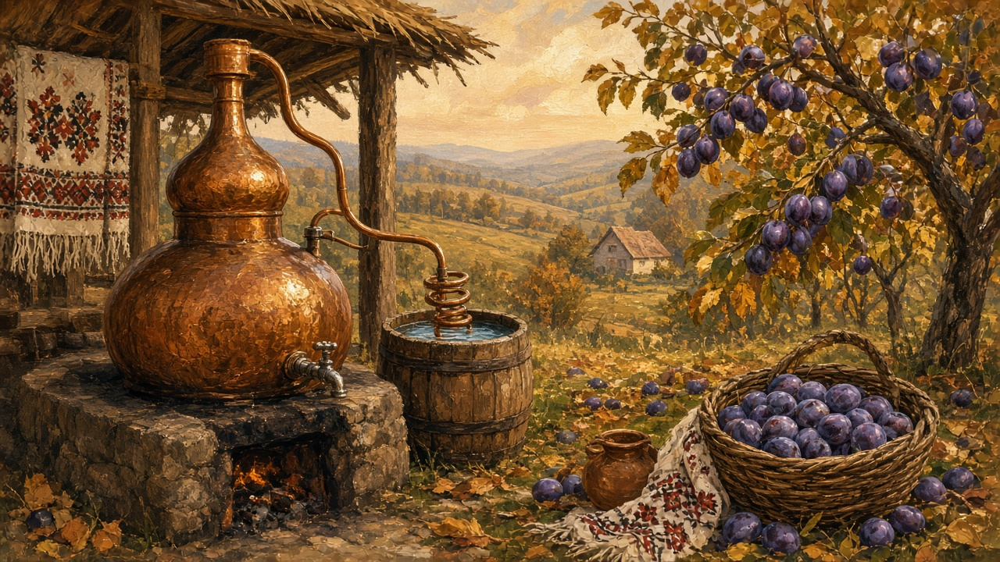

Țuică
Not a cocktail, and not a label. The strong glass a household still pours after the plums, usually from a bottle with no story printed on it.

After the plums
Autumn first fills the crates. The plums — prune — drop, or they are pulled, and they go into barrels in a shed that already smells of last year. Then a day of steam: a cazan in that shed, or in a neighbor’s yard, smoke in cold air, people standing around with nothing that looks like a recipe. The harvest page is wheat, maize, grapes, and jars. This is the other autumn job, timed to the fruit, not to the vine. The year turns toward the stove after it; see autumn on the year. What comes out is a clear spirit people will keep under the house until a guest sits down.
Fruit, then a glass
Țuică is fermented fruit, distilled. Plum is the usual fruit, the one people mean if they say nothing else. Apple, pear, apricot, cherry — those happen too, when the trees had a year. It is not wine. Wine is the other bottle, from grapes, milder, the Sunday pour. This one is smaller, stronger, and it does not get mixed. A guest is offered a little glass, not a drink with a name. Noroc when the glasses touch. You sip. You do not build a night around it. A toast at a wedding or a name day is the same shape: a short pour, a word, bread on the table. The room that holds that table is on the house.
Names that mark a place
Țuică is the common word in the south and the center. In a lot of Transylvania people say pălincă — often the stronger bottle, and not only plum. Rachiu is the broader word: fruit brandy when someone is not pinning it to one orchard or one county. You hear horincă in Maramureș the way you hear a gate before you hear a street name. None of this is a glossary you have to memorize. The names tell you where the speaker’s yard is, more reliably than a shop label. Town talk flattens them into “a shot.” In the yard they are a winter store and a welcome.
What changed
Shop bottles arrived with medals and a legal stamp. EU rules made a lot of backyard stills quieter, or pushed them toward a licensed cazan someone else runs. Apartment kitchens keep a small bottle in the freezer and another on top of the fridge. The unlabeled demijohn is rarer. Some households still fill one for the house when the plums are good. You do not need a map of brands. You need the habit of asking whether this table still pours from what the autumn put away, or only from a screw cap that forgot the tree.